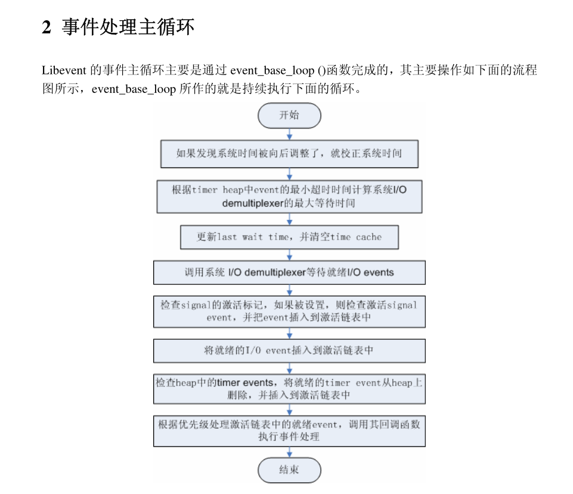
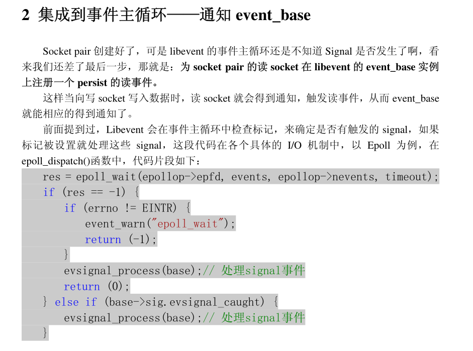

一 序幕
二 Reactor模式
1 Reactor事件处理机制
2 Reactor模式的优点
3 Reactor模式
三 基本使用场景和事件流程
2 基本应用场景
3 代码实例
4 事件处理流程
5 小结
四 libevent源代码文件组织
五 libevent的核心 事件event
1 libevent核心-event
event关注的事件类型

event结构体
2 libevent对event的管理
3 事件设置的接口函数
4 小结
六 初见事件处理框架
1 事件处理框架-event_base
2 创建和初始化event_base
3 接口函数
4 小结
七 事件主循环
1 阶段性的胜利
2 事件处理主循环

3 I/O和Timer事件的统一

4 I/O和Signal事件的统一
5 小结
八 集成信号处理
1 集成策略-使用socket pair
2 集成到事件主循环-通知event_base

3 evsignal_info结构体
4 注册、注销signal事件
5 小结
九 集成定时器事件
十 支持IO多路复用技术
1 统一的关键

2 设置IO demultiplex机制
3 小节
十一 时间管理
十二 让libevent
1 错误使用示例
2 支持多线程的几种模式
2.1 暴力抢占

2.2 纯粹的消息通知机制
2.3 消息通知+同步层
3 例子memcached
4 小结